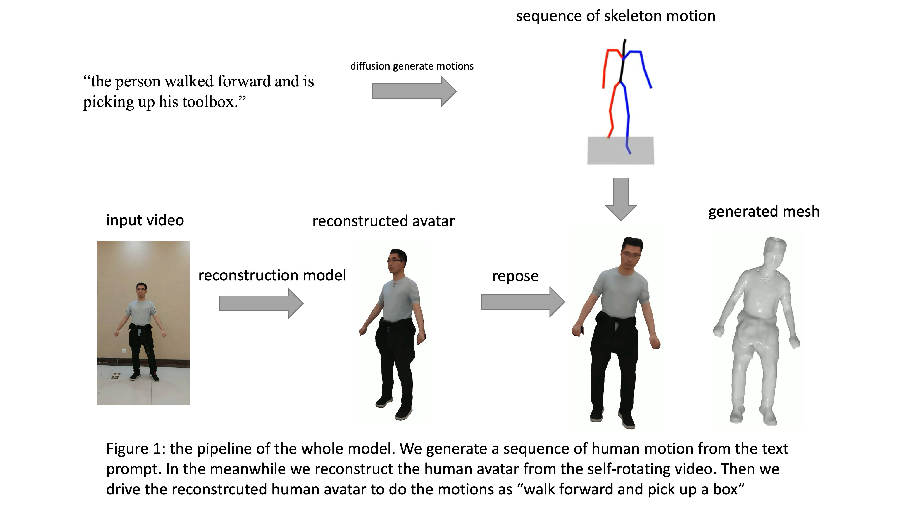

We present a text to human avatar pipeline called DynamicAvatar. Our model could generate realistic human avatar motion from text prompt.
The whole pipeline is composed with two steps: firstly, we use the text-to-motion model to generate human motion sequence based on
a short text description; secondly, we reconstruct a human avatar from a monocular video filming a person's outlook.
Compared to the baseline model(SelfRecon), our new Render Net could greatly reduce the distortion caused by monotonic training
data.
Pipeline

Introduction
Human avatar reconstruction has a great application filed in VR/AR, meta verse, film and Video Game Production。
It aims to generate a 3d reconstruction model of a person from a monocular or multi view video.
After reconstructing the 3d human model, a major application is to drive the model to do some actions.
But people with little 3d animation knowledge, it’s hard for them to manually manipulate
the avatar to move as they wish.
So our motivation is to generate motion sequence based on text prompt and drive the reconstructed avatar
to do these motions. Thus even though you have no prior knowledge, you can still generate a 3d animation with
a customized avatar.
Method
The whole pipeline is composed with two parts: 1. text-to-motion and 2. avatar reconstruction. For the first part, we used
Motion Diffusion model from [1]. For the second part, we have designed a new Rendering model based on SelfRecon [2]
Because in the training video, the model mainly
learnt how the predict the color along horizontal direction.
The distribution of “viewing direction” is not balanced, it concentrates on a horizontal direction. Therefore
when viewing from another direction, it will constantly predict a distorted color.
We proposed a dynamic weighted render net, which can greatly reduce the color distortion. Following is the
comparison with baseline.